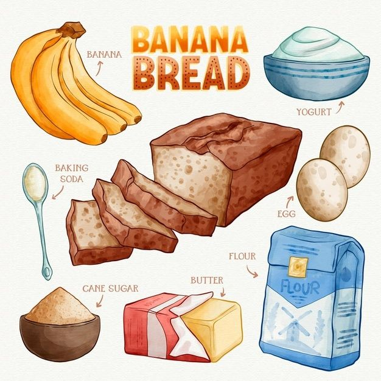

Recipe for the Most Awesome Banana Bread Ever!

Ingredients:
- 2-3 really ripe bananas (the spottier, the better!)
- 1/2 cup of pure magic (also known as melted unsalted butter)
- 1 cup of sugar (for a touch of sweetness)
- 2 large eggs (because we need some company in this bread party)
- 1 teaspoon of vanilla extract (because vanilla makes everything better)
- 1 1/2 cups of all-purpose flour (the secret to fluffy goodness)
- 1 teaspoon of baking soda (to make it rise like a champion)
- 1/2 teaspoon of salt (just a pinch to enhance the flavors)/li>
- 1/2 cup of chopped walnuts or pecans (optional, but adds nutty awesomeness)
Instructions:
- Preheat your oven to a toasty 350°F (175°C). Get it all warmed up for the banana bread extravaganza!
- Take those ripe bananas and give them a good old mash with a fork or a potato masher. Show 'em who's boss!
- In a separate bowl, grab that melted butter and introduce it to the sugar. Mix them together until they
become the best of friends.
- Now, let's bring in the eggs, one at a time, and whisk away. Give them a grand entrance, like they're
walking the red carpet!
- Time to add a teaspoon of vanilla extract. Vanilla is like the fairy godmother of flavors, making everything
magical.
- In another bowl, whisk together the all-purpose flour, baking soda, and just a pinch of salt. They'll form
the dream team of dry ingredients.
- Slowly pour the dry mixture into the wet mixture. Stir gently until they all mingle and become one glorious
batter. No need to rush, we're creating a masterpiece here!
- If you're feeling nutty (literally), go ahead and add those chopped walnuts or pecans to the party. They add
a delightful crunch.
- Grab your favorite loaf pan and give it a little love by greasing it or lining it with parchment paper. We
want this bread to slide out like a boss later!
- Pour the batter into the pan, spreading it around like a comfy blanket for your future deliciousness.
- Pop that pan into the preheated oven and set your timer for 60-70 minutes. Now, dance around the kitchen and
enjoy the sweet aroma filling the air!
- When the time's up, insert a toothpick into the center of the bread. If it comes out clean, your masterpiece
is ready! If not, give it a few more minutes to reach perfection.
- Take the bread out of the oven and let it cool in the pan for about 10 minutes. It's like a cozy nap time
for your bread.
- Take the bread out of the oven and let it cool in the pan for about 10 minutes. It's like a cozy nap time
for your bread.
- Once it's cool, slice it up and indulge in each mouthwatering bite. Share it with friends and family or keep
it all for yourself. You deserve it!
Voilà! You've just baked the most epic banana bread in town. Enjoy every delightful slice and embrace the joy of
homemade deliciousness!